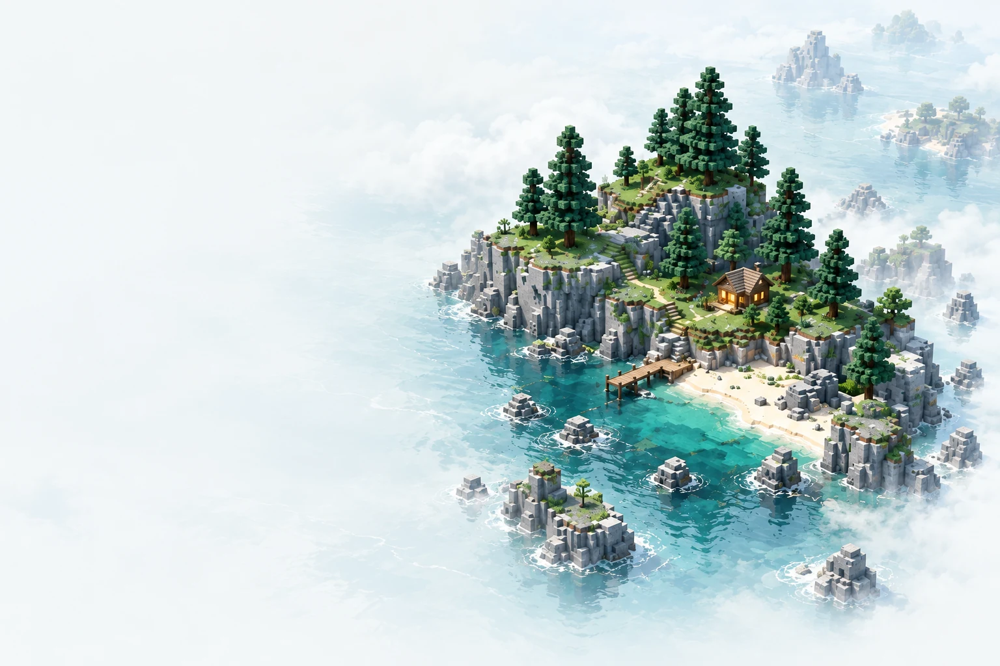

世界各就各位
添加已有的游戏目录，收藏和搜索实例。Java、内存与启动参数也能按实例设置。

这里将展示启动器的真实界面。
浅色从挑选游戏版本，到装好出发需要的内容，
把准备工作放在同一个地方。
添加已有的游戏目录，收藏和搜索实例。Java、内存与启动参数也能按实例设置。
通过 Modrinth 搜索整合包、Mod、资源包与光影，选择安装实例，再查看适配的发布版本。
游戏和内容下载集中排队，支持暂停、继续、取消和失败重试，随时查看任务日志。
检测并记住本机 Java，为不同游戏配置内存；启动前检查所需文件，方便定位问题。
从浅色到夜色，从纯色到磨砂与玻璃。调整背景、透明度与卡片动效，也能为「上次游玩的地图」单独设置图片和文字颜色。
外部服务的接入资格会影响部分功能。
我们会随发布说明更新实际状态。
整合包、Mod、资源包和光影的搜索与下载。安装仍取决于游戏版本、加载器和内容本身的兼容性。
已实现系统浏览器 PKCE 登录和备用设备码流程。Minecraft Services API 访问资格待确认，暂不承诺正版登录与官方皮肤操作可用。
尚未申请 API 访问资格，暂不提供 CurseForge 在线下载。当前可使用 Modrinth 与受支持的本地内容。
ISLAND 是独立开发的非官方 Minecraft Java 版启动器，与 Mojang Studios 或 Microsoft 无隶属、合作或背书关系。
已实现浏览器授权码 + PKCE 和备用设备码流程，但本应用的 Minecraft API 访问资格仍待确认。正版服务需要已获准的应用与拥有 Java 版游戏的账号，请以发布说明为准。
在启动器下载中心选择内容类型和安装实例，搜索 Modrinth 内容并选择兼容版本。Mod 需要对应的加载器；光影通常还需要 Iris 或 OptiFine 等组件。资源包和光影下载后需在游戏中启用。
可以添加已有的 .minecraft 目录，浏览其中的实例和存档。为避免混用不同版本的内容，建议按实例管理目录；具体兼容性仍取决于游戏、加载器和依赖。
下载和版本说明通过 GitHub Releases 提供，问题可通过项目 Issues 反馈。本站不提供网页账号登录，也不托管 Minecraft 游戏文件。